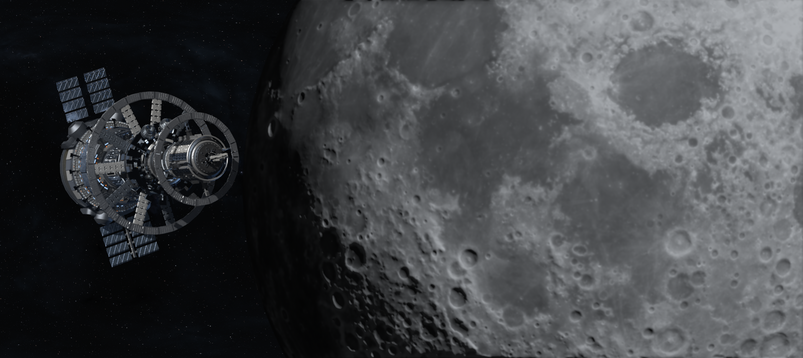
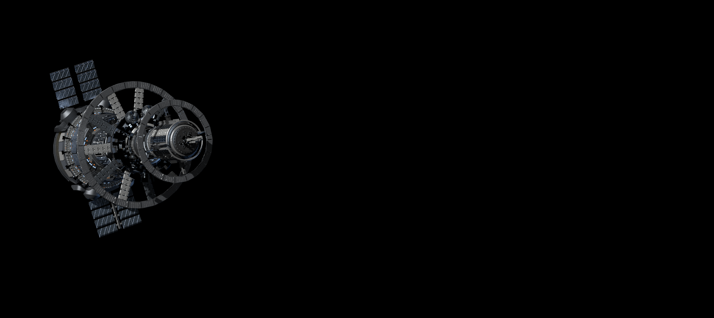
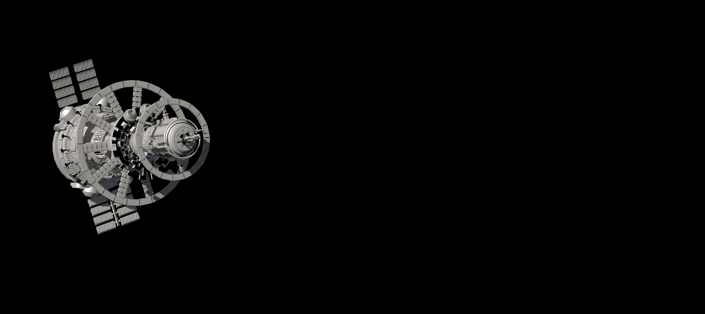
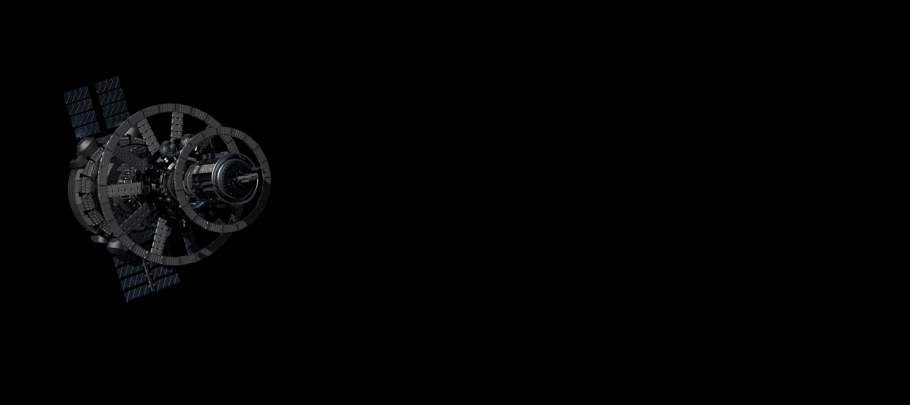
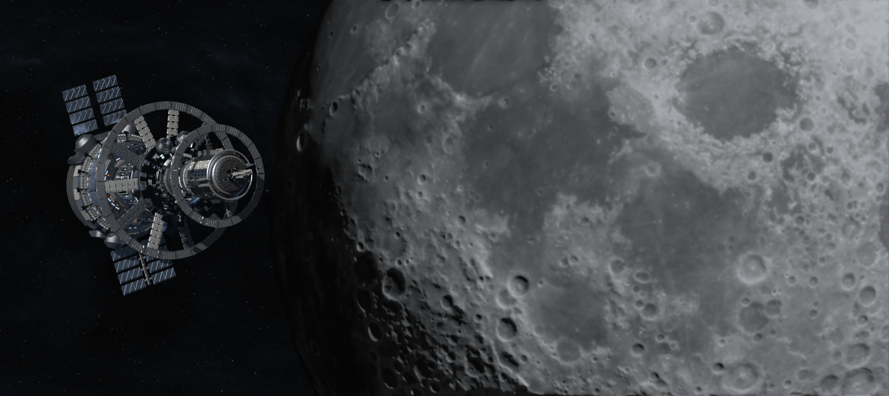

Silhouette first
Blender reviews established the station's readable profile, framing and motion before the lighting build.
02 / LIGHTING TD · LOOK DEVELOPMENT
A 15-second station-and-Moon shot developed from camera and motion design through USD assembly, RenderMan lighting and AOV delivery, and a controlled Nuke composite.
Personal Lighting TD study · 15 seconds · 360 frames · 1920 × 858 · 24 fps

/ FINAL SHOT
The restrained camera and station motion keep the dense structure readable while the Moon establishes distance, direction and visual weight.
/ THE BRIEF
The station contains hundreds of interlocking forms, repeated structures and reflective surfaces. I designed a controlled side-on composition that preserves the circular silhouette and creates a strong scale relationship with the Moon.
I was responsible for the visual direction, shot design, material distribution and tuning, lighting, render-pass strategy, Nuke integration and delivery checks. The base station geometry and several texture packs were supplied assets.
/ SHOT DESIGN & USD
A 140 mm camera compresses depth and keeps the station graphic against negative space. Across the shot, the station rotates seven degrees on its local longitudinal axis and advances while the camera follows 42 percent of its translation with a two-unit dolly.
Blender reviews established the station's readable profile, framing and motion before the lighting build.
The scene transfer was checked for 223 mesh paths and a complete 360-frame motion range before look development.
Camera follow and restrained rotation avoid distracting parallax while maintaining a deliberate sense of travel.
/ LOOK DEVELOPMENT
I rebuilt the RenderMan response in Katana because the source FBX did not carry the original vendor shader graph. PxrSurface networks define painted metal, brushed iron, structural weave and solar panels; PxrCurvature introduces controlled edge wear and cavity dirt.

Close review of metallic response, roughness variation, solar surfaces and small emissive accents.

Diffuse, specular and emission contributions retain the structure of the asset without flattening its layered surfaces.
/ LIGHTING & RENDERING
A warm key defines the station's large forms, a cooler edge separates the silhouette, and localized fill preserves machinery inside the rings. Small emissions create scale cues without competing with the principal lighting.
RenderMan produced a beauty, a multichannel AOV file and an object Cryptomatte for every frame: 1,080 EXRs across the 360-frame shot. The package includes albedo, diffuse, specular, emission, normal, depth and motion-vector data for controlled downstream work.
/ BREAKDOWN
The breakdown locks frame 541 so the effect of each lighting, material and compositing decision can be compared without motion obscuring the change.

Form, silhouette and primary light direction.

Broad surface families establish visual hierarchy.
Muted colour variation and small functional accents.
Reflection breakup differentiates painted and bare metal.
Surface wear and solar response support scale.
Diffuse, specular and emission contributions.
The approved rendered asset before environment integration.

The 2D Nuke plate establishes scale and location.
Light wrap, highlight control, vignette and grain.
/ NUKE FINISH
The composite uses the real diffuse, specular and emission components in linear space. Light wrap, highlight control, vignette and grain integrate the station with a static Moon-and-stars EXR plate created in Nuke.
The Moon is a 2D element and therefore has no physical parallax. The project does not claim a documented ACES or OCIO pipeline; the intermediate was linear EXR and the final delivery was a 16-bit sRGB PNG sequence.
/ DELIVERY & QA
A Windows bridge issue was solved with raw EXR output and a signature, lock and decode workflow that made interrupted renders safe to resume. FFmpeg decoded the final outputs successfully, and five distributed points in the shot were visually sampled for delivery review.
Visual direction, camera and motion design, material distribution and tuning, lighting, RenderMan pass strategy, Nuke compositing, pipeline diagnosis and delivery validation: Joshua Medina.
The base station model and several texture packs were supplied third-party assets; I did not model the station. Their original licenses remain applicable. AI assistance supported scripting and automation tasks.
This is a personal portfolio study and was not produced by or for Industrial Light & Magic.